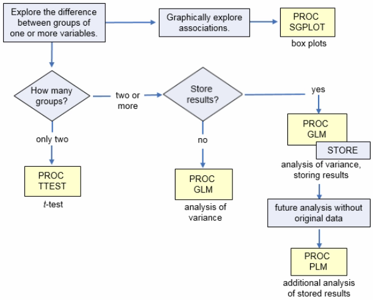
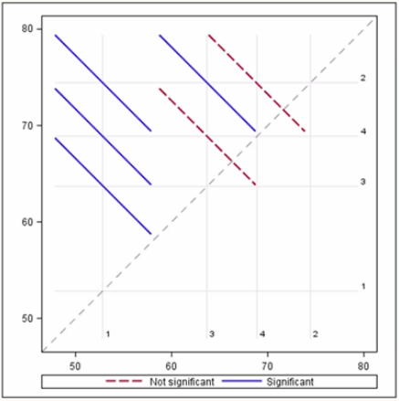
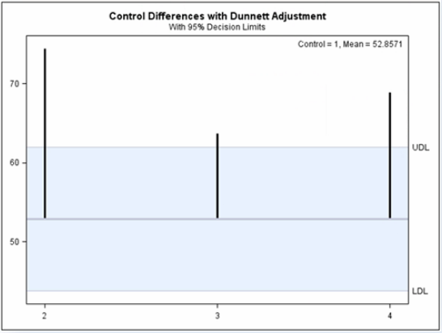
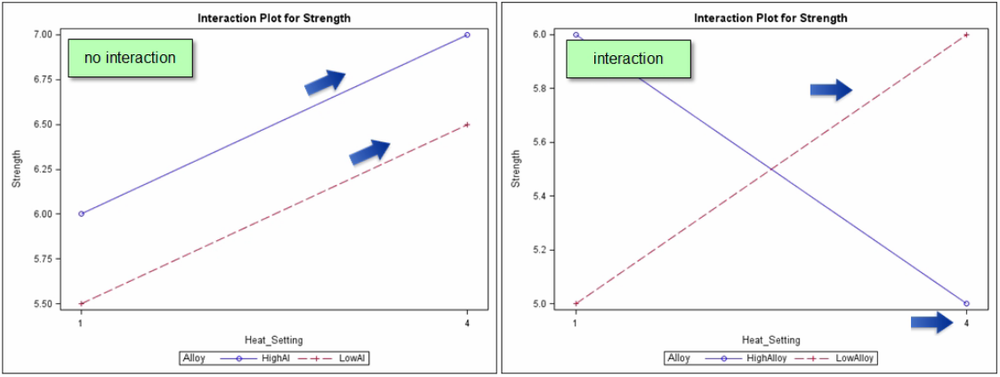

Analysis of Variance (ANOVA)

Graphical Analysis of Associations¶
- Before analyzing your data, you need to have a general idea of any associations between predictor variables and response variables
- An association exists between two variables when the expected value of one variable differs at different levels of the other variable
- One method for doing this is to conduct a graphical analysis of your data
- Associations between categorical predictor variable and a continuous response variable can be explored with
SGPLOTto product box plots (box-and-whisker plots) (X predictor variable vs Y response variable) - If the regression line conecting the means of Y at each value of X is not horizontal there might be an association between them
- If the regression line is horizontal there is no association: knowing the value of X doesn't tell you anything about the value of Y
PROC SGPLOT¶
1 2 3 4 | PROC SGPLOT DATA=SAS-data-set;
VBOX response-variable / CATEGORY=predictor-variable
CONNECT=MEAN DATALABEL=outlier-ID-variable;
RUN;
|
Two-Sample t-Tests¶
- You can use a one-sample t-test to determine if the mean of a population is equal to a particular value or not
- When you collect a random sample of independent observations from two different populations, you can perform a two-sample t-test
When you compare the means of two populations using a two-sample t-test you make three assumptions:
- The data contains independent observations
- The distributions of the two populations are normal (check histograms and normal probability/Q-Q plots)
- The variances in these normal distributions are equal (F-test is the formal way to verify this assumption)
$F$ statistic: $F=max(s_1^2,s_2^2)/min(s_1^2,s_2^2) \ge 1$
$H_0$: σ$_1^2$ $=$ σ$_2^2\rightarrow F \approx 1$
$H_a$: σ$_1^2$ $\ne$ σ$_2^2\rightarrow F\gt 1$
The Pr>F value in the Equality of Variances table represents the p-value of the F-test for equal variances
Two-sided Tests
PROC TTEST¶
PROC TTESTperforms a two-sided two-sample t-test by default (confidence limits and ODS graphics included)- It automatically test the assumption of equal variances and provides an exact two-sample t-test (pooled) when the assumptions are met and an approximate t-test (scatterthwaite) when it is not met
- The pooled and scatterthwaite t-tests are equal when the variances are equal
1 2 3 4 5 | PROC TTEST DATA=SAS-data-set <options>
plots(shownull)=interval; \* shownull = vertical reference line at the mean value of H0 *\
CLASS variable; \* Classification variable *\
VAR variable(s); \* Continuous response variables *\
RUN;
|
One-sided Tests
- It can increase the power of a statistical test, meaning that if you are right about the direction of the true difference, you will more likely detect a significant difference with a one-sided test than with a tow-sided test
- The difference between the mean values for the null hypothesis will be defined by the alphabetical order of the classification variables (e.g.: female - male)
1 2 3 4 5 | PROC TTEST DATA=SAS-data-set
plots(only shownull)=interval H0=0 SIDES=u; \* only = suppress the default plots; u/l = upper/lower-tailed t-test *\
CLASS variable; \* Classification variable *\
VAR variable(s); \* Continuous response variables *\
RUN;
|
One-Way ANOVA¶
When you want to determine whether there are significant differences between the means of two or more populations, you can use analysis of variance (ANOVA).
- You have a continuous dependent (response) variable and a categorical independent (predictor) variable
- You can have many levels of the predictor variable, but you can have only one predictor variable
- The squared value of the t statistic for a two-sample t-test is equal to the F statistic of a one-way ANOVA with two populations
- With ANOVA the $H_0$ is that all of the population means are equal and $H_a$ is that not all the population means are equal (at least one mean is different)
To perform an ANOVA test you make three assumptions:
- You have a good, random, representative sample
- The error terms are normally distributed
- The residuals (each observation minus its group mean) are estimates of the error term in the model so you verify this assumption by examining diagnostic plots of the residuals (if they are approximately normal, the error terms will be too)
- If your sample sizes are reasonably large and approximately equal across groups, then only severe departures from normality are considered a problem
- Residuals always sum to 0, regardless of the number of observations.
- The error terms have equal variances across the predictor variable levels: you can conduct a formal test for equal variances and also plot the residuals vs predicted values as a way to graphically verify this assumption
PROC GLM¶
You can use PROC GLM to verify the ANOVA assumptions and perform the ANOVA test. It fits a general linear model of which ANOVA is a special case and also displays the sums of squares associated with each hypothesis it tests.
1 2 3 4 5 6 7 | PROC GLM DATA=SAS-data-set
PLOTS(ONLY)=DIAGNOSTICS(UNPACK); /* print each plot on a separated page */
CLASS variable(s);
MODEL dependents=intependents </options>;
MEANS effects / HOVTEST </options>;
RUN;
QUIT;
|
HOVTEST: homogeneity of variance test option (Levene's test by default) + plot of residuals vs predicted values (means)
- If the between-group variability is significantly larger than the within-group variability, you reject the null that all the group means are equal
- You partition out the variability using sums of squares:
- Between-group variation: also called Model Sum of Squares (SSM): $\sum n_i (\overline Y_i- \overline {\overline Y})^2$
- Within-group variation: also called Error Sum of Squares (SSE): $\sum \sum (Y_{ij}- \overline Y_i)^2$
- Total variation: also called the Total Sum of Squares (SST): $\sum \sum (Y_{ij}- \overline {\overline Y})^2$
- SSM and SSE represent pieces of SST: the SSM is the variability explanied by the predictor variable levels and SSE the variability not explained by the predictor variable levels
- You want the larger piece of the total to be better represented by what you can explain (SSM) vs what you can't explain (SSE)
ANOVA with Data from a Randomized Block Design¶
In an observational study, you often examine what already occurred, and therefore have little control over factors contributing to the outcome. In a controlled experiment, you can manipulate the factors of interest and can more reasonably claim causation.
- The variation due to the nuisance factors (fundamental to the probabilistic model but are no longer of interest) is part of the random variation that the error sum of squares accounts for.
- Including a blocking variable in the model is in essence like adding a second predictor variable to the model in terms of the way you write it
- The way you set up your experiment and data collection is what defines it as a blocking factor
- Although you're not specifically interested in its effect, controlling the blocking variable makes it easier to detect an effect of the factor of interest
- In a model that does not include a blocking variable, its effects are lumped into the error term of the model (unaccounted for variation)
- When you include a blocking variable in your ANOVA model, any effects caused by the nuisance factors that are common within a sector are accounted for in the model sum of squares rather than the error sum of squares
You make two more assumptions when you include a blocking factor in the model:
- Primary variable levels are randomly assigned within each block
- The effects of the primary variable are constant across the levels of the blocking factor (the effects don't depend on the block they are in, there are no interactions with the blocking variable)
Note
Levene's test for homogeneity is only available for one-way ANOVA models, so in this case, you have to use the Residuals by Predicted plot.
PROC GLM¶
1 2 3 4 5 6 | PROC GLM DATA=SAS-data-set
PLOTS(ONLY)=DIAGNOSTICS(UNPACK); /* print each plot on a separated page */
CLASS variable(s) blocking-factor(s);
MODEL dependents=intependents blocking-factor(s)</options>;
RUN;
QUIT;
|
- Rule of thumb: if the F-value is > 1, then it helped to add the blocking factor in your model
- If you compare the MSE (Mean Square in the table) without and with including the blocking variable in the model, there is a drop of its value meaning that you have been able to account for a bit more of the unexplained variability due to the nuisance factors helping o have more precise estimates of the effect of your primary variable
- It is also reflected in the R-Square value that is increased when a blocking factor is added to the model
- Thanks to adding a blocking variable to your model you can get your primary variable to be significant
- The Type III SS at the bottom of the output tests for the difference due to each variable, controlling for or adjusting for the other variable
ANOVA Post Hoc Tests¶
This test is used to determine which means differ from other means and control the error rate using multiple comparison method.
Assuming the null hypothesis is true for your different comparisons, the probability that you conclude a difference exist at least one time when there really isn't a difference increases with the more tests you perform. So the chance that you make a Type I error increases each time you conduct a statistical test.
- The comparisonwise error rate (CER) is the probability of a Type I error on a single pairwise test (α)
- The experimentwise error rate (EER) is the probability of making at least one Type I error when performing the whole set of comparisons. It takes into consideration the number of pairwise comparisons you make, so it increases as the number of tests increase:
Tukey's Multiple Comparison Method
- This method, which is also known as the Honestly Significant Difference test, is a popular multiple comparison test that controls the EER
- This tests compares all possible pairs of means, so it can only be used when you make pairwise comparisons
- This method controls $EER=\alpha$ when all possible pairwise comparisons are considered and controls $EER<\alpha$ when fewer than all pairwise comparisons are considered
Dunnett's Multiple Comparison Method
- This method is a specialised multiple comparison test that allows you to compare a single control group to all other groups
- It controls $EER \le \alpha$ when all groups are compared to the reference group (control)
- It accounts for the correlation that exists between the comparisons and you can conduct one-sided tests of hypothesis against the reference group
PROC GLM¶
1 2 3 4 5 6 7 8 9 | PROC GLM DATA=SAS-data-set;
CLASS variable(s);
MODEL dependents=intependents </options>;
LSMEANS effects </options-test-1>;
LSMEANS effects </options-test-2>;
[...]
LSMEANS effects </options-test-n>;
RUN;
QUIT;
|
PDIFF=ALLrequests p-values for the differences betweenALLthe means and a diffogram is produced automatically displaying all pairwise least square means differences and indicating which are significant- It can be undestood as a least squares mean by least squares mean plot
- The point estimates for differences between the means for each pairwise comparison can be found at the intersections of the gray grid lines (intersection of appropriate indexes)
- The red/blue diagonal lines show the confidence intervals for the true differences of the means for each pairwise comparison
- The grey 45$^{\circ}$ reference line represents equality of the means (if the confidence interval crosses over it, then there is no significant difference between the two groups and the diagonal line for the pair will be dashed and red; if the difference is significant the line will be solid and blue)

- The
ADJUST=option specifies the adjustment method for multiple comparisons - If you don't specify an option SAS uses the Tukey method by default, if you specify
ADJUST=Dunnettthe GLM procedure produces multiple comparisons using Dunnett's method and a control plot- The control plot displays the least squares mean and confidence limits of each group compared to the reference group
- The middle horizontal line represents its least square mean value (you can see the arithmetic mean value un the upper right corner of the graph)
- The shaded area goes from the lower decision limit (LDL) to the upper decision limit (UDL)
- There is a vertical line for each group that you're comparing to the reference (control) group. If a vertical line extends past the shaded area, then the group represented by the line is significantly different (small p-value) than the reference group

PDIFF=CONTROLU('value')specifies the control group for the Dunnett's case: the direction of the sign in Ha is the same as the direction you are testing, so this is a one-sided upper-tailed t-test- If you specify
ADJUST=TSAS will make no adjustments for multiple comparisons: is not recommended as there's a tendency to find more significant pairwise differences than might actually exist
Two-Way ANOVA with Interactions¶
When you have a continuous response variable and two categorical predictor variables, you use the two-way ANOVA model
- Effect: the magnitude of the expected change in the response variable presumably caused by the change in value of a predictor variable in the model
- In addition, the variables in a model can be referred to as effects or terms
- Main effect: is the effect of a single predictor variable
- Interaction effects: when the relationship of the response variable with a predictor changes with the changing of another predictor variable (the effect of one variable depends on the value of the other variable)

When you consider an ANOVA with more than one predictor variable, it's called n-way ANOVA where n represents the number of predictor variables
- The analysis in a randomized block design is actually a special type of two-way ANOVA in which you have one factor of interest and one blocking factor
- When you analyze a two-way ANOVA with interactions, you first look at any tests for interactions among the factors
- If there is no interaction between the factors you can interpret the tests for the individual factor effects to determine their significance/non-significance
- If an interaction exists between any factors, the tests for the individual factor effects might be misleading due to masking of these effect by the interaction (this is specially true for unbalanced data with different number of observations for each combination of groups)
- When the interaction is not statistically significant you can analyze the main effect with the model in its current form (generally the method you use when you analyze designed experiments)
- Even when you analyze designed experiments, some statisticians might suggest that if the interaction is not significant, you can delete the interaction effect from your model, rerun the model and then just analyze the main effects increasing the power of the main effects test
- If the interaction term is significant, it is good practice to keep the main effect terms that make up the interaction in the model, whether they are significant or not (this preserves model hierarchy)
- You have to make the same three assumptions used in the ANOVA test
- The interaction terms are also called product terms or crossed effects
PROC GLM¶
1 2 3 4 5 6 7 | PROC GLM DATA=SAS-data-set;
CLASS independent1 independent2;
MODEL dependent = independent1 independent2 independent1*independent2;
or
MODEL dependent = independent1 | independent2;
RUN;
QUIT;
|
This program is fitting to this model:
- In most situations you will want to use the Type III SS
- The Type I SS (sequential) are the sums of squares you obtain from fitting the effects in the order you specify in the model
- The Type III SS (marginal) are the sums of squares you obtain from fitting each effect after all the other terms in the model, that is the sums of squares for each effect corrected for the other terms in the model
- When examining these results you first have to look at the interaction term and if it's significant (p-value), the main effects don't tell you the whole story. It that is the case, you don't need to worry all that much about the significance of the main effects at this point for two reasons:
- You know that the effect of each variable1 level changes for the different variable2 levels
- You want to include the main effects in the model, whether they are significant or not, to preserve model hierarchy
- You can analyze the interaction between terms by looking at the interaction plot that SAS produces by default when you include an interaction term in the model
- To analyze and interpret the effect of one of the interacting variables you need to add the
LSMEANSstatement to your program
1 2 3 4 5 6 | PROC GLM DATA=SAS-data-set ORDER=INTERNAL PLOTS(ONLY)=INTPLOT;
CLASS independent1 independent2;
MODEL dependent = intependent1 independent2 independent1*independent2;
LSMEANS independent1*independent2 / SLICE= independent1;
RUN;
QUIT;
|
SAS creates two types of mean plots when you use the LSMEANS statement with an interaction term:
- The first plot displays the least squares mean (LS-Mean) for every effect level
- The second plot contains the same information rearranged so you can look a little closer at the combination levels
STORE statement¶
You can add a STORE statement to save your analysis results in an item store (a binary file format that cannot be modified). This allows you to run post-processing analysis on the stored results even if you no longer have access to the original data set. The STORE statement applies to the following SAS/STAT procedures: GENMOD, GLIMMIX, GLM, GLMSELECT, LOGISTIC, MIXED, ORTHOREG, PHREG, PROBIT, SURVEYLOGISTIC, SURVEYPHREG, and SURVEYREG.
1 2 | STORE <OUT=>item-store-name </ LABEL='label'>; |
item-store-nameis a usual one- or two-level SAS name, similar to the names that are used for SAS data setslabelidentifies the estimate on the output (is optional)
PROC PLM¶
To perform post-fitting statistical analysis and plotting for the contents of the store item, you use PROC PLM. The statements and options that are available vary depending upon which procedure you used to produce the item store.
1 2 3 4 5 6 7 8 9 10 | PROC PLM RESTORE=item-store-specification <options>; EFFECTPLOT INTERACTION(SLICEBY=variable) <plot-type <(plot-definition options)>> / CLM </ options>; LSMEANS <model-effects> </ options>; LSMESTIMATE model-effect <'label'> values <divisor=n><,...<'label'> values <divisor=n> </ options>; SHOW options; SLICE model-effect / SLICEBY=variable ADJUST=tukey </ options>; WHERE expression; RUN; |
RESTOREspecifies the source item store for processingEFFECTPLOTproduces a display of the fitted model and provides options for changing and enhancing the displaysLSMEANScomputes and compares least squares means (LS-means) of fixed effectsLSMESTIMATEprovides custom hypothesis tests among least squares meansSHOWusesODSto display contents of the item store. This statement is useful for verifying that the contents of the item store apply to the analysis and for generatingODStables.SLICEprovides a general mechanism for performing a partitioned analysis of the LS-means for an interaction (analysis of simple effects) and it uses the same options as theLSMEANSstatementWHEREis used in the PLM procedure when the item store containsBY-variableinformation and you want to apply thePROC PLMstatements to only a subset of the BY groups